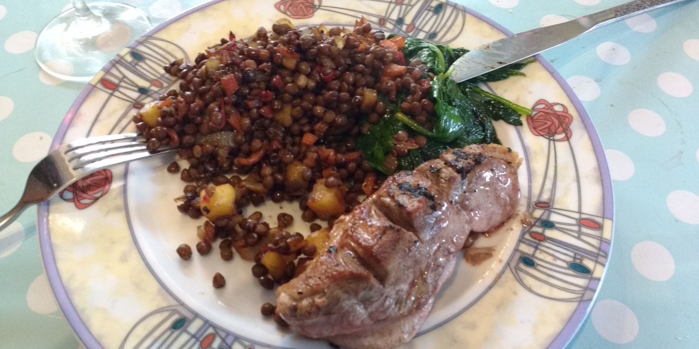

How to install the latest version of Docker Compose on Linux (and why you should)David Rutland November 8, 2023
Mealie - Probably the best self-hosted recipe manager... In the world.David Rutland September 21, 2023